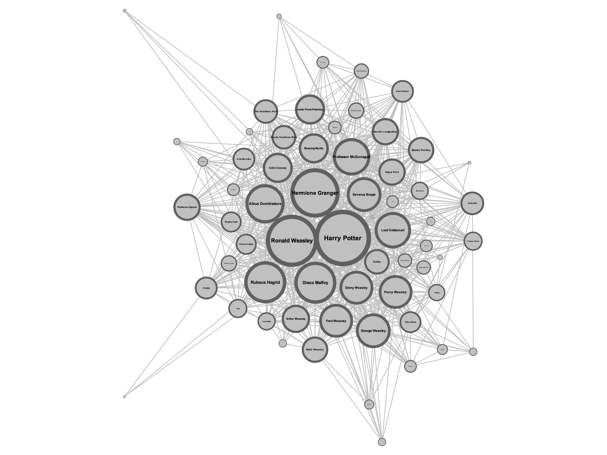
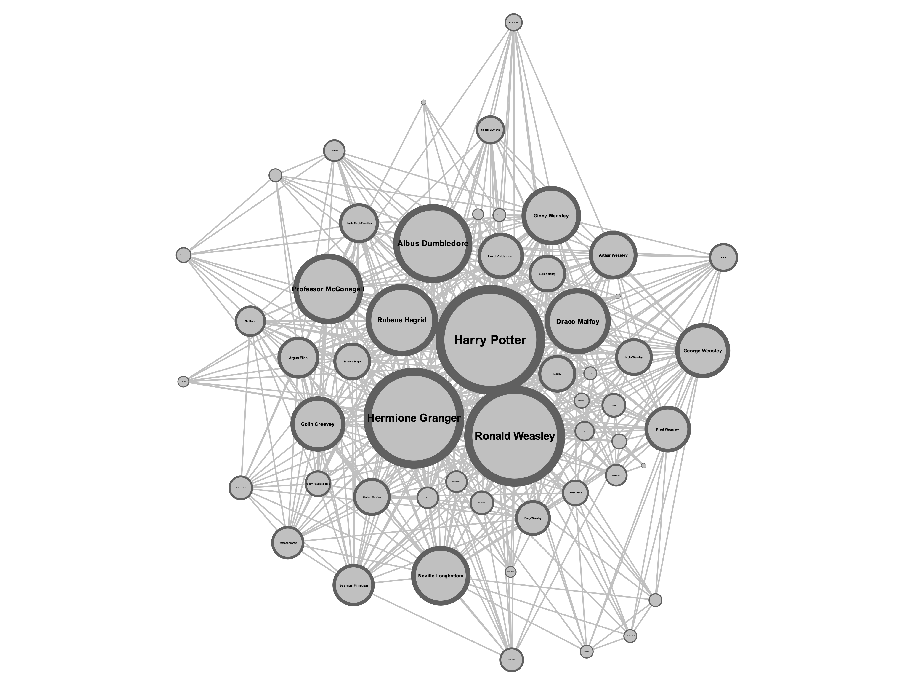
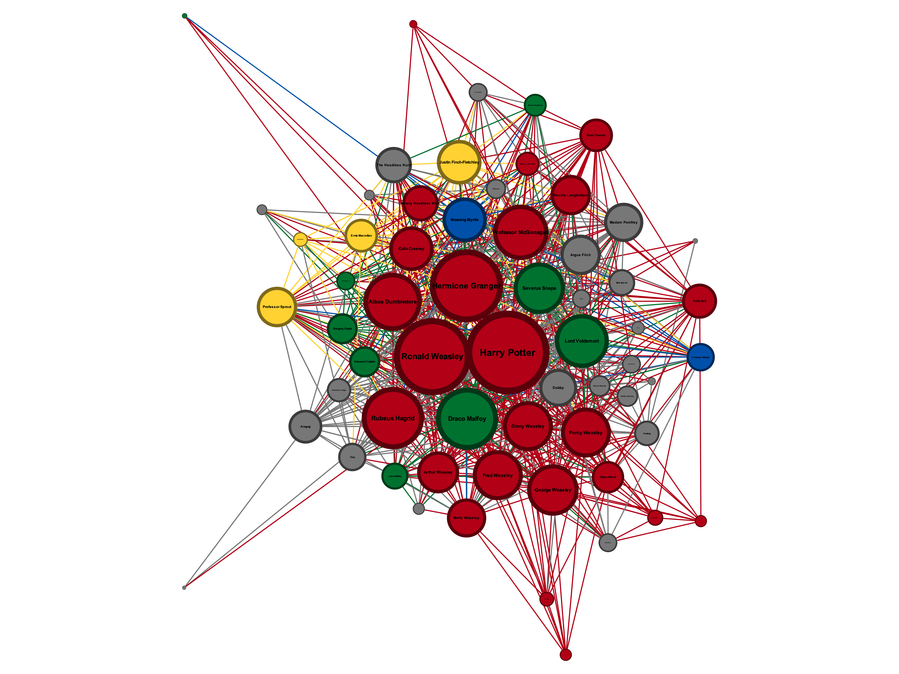
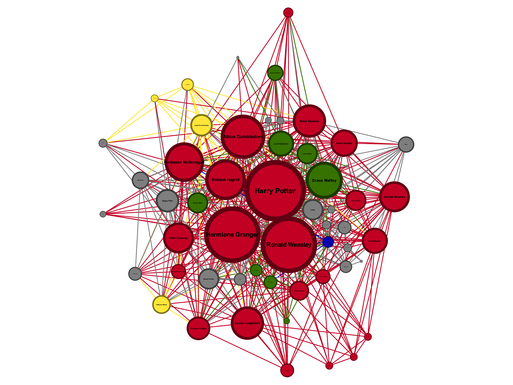
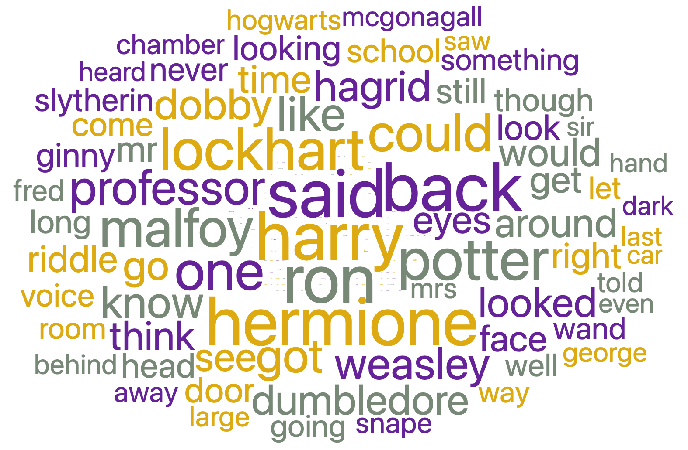
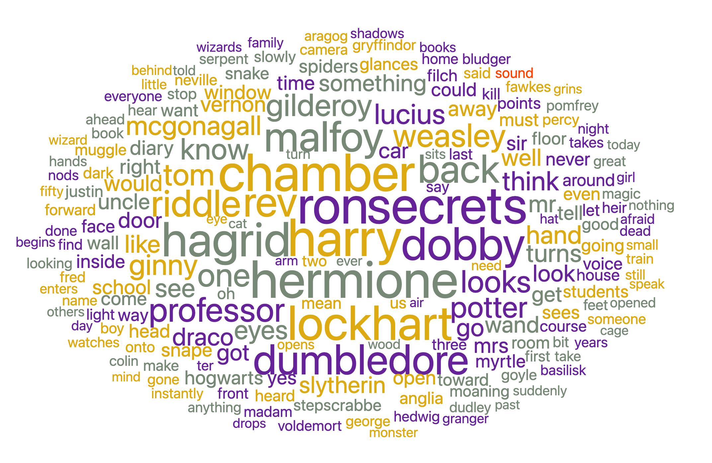

1. Contexte et question de recherche
Beaucoup de fans de Harry Potter estiment que les films simplifient l'histoire par rapport aux livres : moins de détails, des personnages secondaires éclipsés, des thèmes moins développés. Mais qu'en est-il vraiment ? Cette impression, largement répandue dans la communauté des fans, est-elle vérifiable concrètement ?
Ce projet s'inscrit dans le champ des études littéraires computationnelles. Il propose d'analyser objectivement les différences entre le roman Harry Potter et la Chambre des Secrets de J.K. Rowling et son adaptation cinématographique de 2002 réalisée par Chris Columbus. La question centrale est la suivante :
L'adaptation cinématographique de Harry Potter et la Chambre des Secrets simplifie-t-elle la structure des relations entre personnages et le contenu thématique par rapport au roman original ?
Cette question se décline en trois axes empiriquement testables :
- Les personnages centraux sont-ils les mêmes dans le livre et dans le film ?
- Le réseau de relations entre personnages est-il structurellement plus simple dans le film ?
- Le vocabulaire et les thèmes dominants diffèrent-ils entre les deux corpus ?
2. Nature et choix des données
Le corpus est constitué de deux sources textuelles en anglais, collectées en juin 2026 :
- Le roman — Harry Potter and the Chamber of Secrets de J.K. Rowling, au format PDF (251 pages, environ 87 600 mots), téléchargé depuis hasanboy.uz. Le PDF possède une couche texte embarquée permettant une extraction directe sans recours à l'OCR.
- Le script du film — Harry Potter and the Chamber of Secrets, screenplay de Steve Kloves (2002), au format PDF (150 pages, environ 28 200 mots bruts), téléchargé depuis Script Slug. Il s'agit d'un PDF généré depuis Word, avec une couche texte native et propre. Le script a été préféré aux sous-titres car il contient à la fois les dialogues et les indications de scène, offrant une représentation plus complète du film.
Le corpus total représente environ 115 000 mots, ce qui est suffisant pour une analyse empirique robuste. Le recours au tome 2 plutôt qu'au tome 1 s'explique par une contrainte technique : le script du tome 1 disponible était un scan OCR de mauvaise qualité, rendant l'extraction textuelle peu fiable.
3. Traitement des données
L'ensemble du traitement a été réalisé en Python dans un notebook Jupyter annoté, disponible dans le dossier technique. Les opérations ont été conduites séparément sur chaque corpus.
Roman : extraction via pdfminer, suppression du front matter
(copyright, dédicace), normalisation des sauts de page et espaces multiples, découpage
automatique en 18 chapitres par détection du motif — CHAPTER [MOT] —,
puis suppression de la ponctuation en conservant les tirets utiles aux noms composés.
Script : extraction via pdfminer, suppression du front matter,
puis nettoyage du bruit structurel propre au format screenplay : 91 en-têtes de page
répétitifs (THE CHAMBER OF SECRETS - Rev. X/XX/XX), numéros de scène,
numéros de page, lignes CONTINUED:, indications de scène (EXT./INT.)
et transitions (FADE IN, DISSOLVE TO).
Suppression de la ponctuation en dernière étape.
Pour la construction des réseaux, un dictionnaire de 65 personnages a été constitué manuellement, associant à chaque nom canonique l'ensemble de ses alias dans le texte (ex. Rubeus Hagrid → [« Hagrid », « Rubeus »]). Une logique anti-double-comptage a été implémentée : les alias multi-mots sont prioritaires sur les alias courts. Les cooccurrences sont calculées sur une fenêtre glissante de 100 mots, identique pour les deux corpus afin de garantir la comparabilité.
4. Analyses et visualisations
Deux analyses de nature différente ont été menées pour répondre à la question de recherche.
4.1 Analyse de réseaux — Gephi
Pour chaque corpus, un réseau de cooccurrences de personnages a été construit : les nœuds représentent les personnages, les arêtes leurs cooccurrences dans une fenêtre de 100 mots. La taille des nœuds reflète leur degré (nombre de connexions) et les couleurs indiquent leur appartenance à une maison de Poudlard (algorithme ForceAtlas 2).
| Statistique | Roman | Film |
|---|---|---|
| Nœuds (personnages) | 63 | 54 |
| Arêtes (cooccurrences) | 746 | 509 |
| Degré moyen | 23,683 | 18,852 |
| Densité | 0,382 | 0,356 |
| Modularité | 0,025 | 0,003 |
| Coefficient de clustering | 0,757 | 0,742 |
Ces chiffres confirment que le réseau du film est structurellement moins dense que celui du roman : 9 personnages de moins, 237 arêtes de moins, et un degré moyen inférieur de près de 5 points. La densité légèrement plus faible du film (0,356 contre 0,382) indique que les connexions entre personnages sont proportionnellement moins nombreuses, même en tenant compte de la différence de taille du réseau. La modularité très basse dans les deux cas (0,025 et 0,003) suggère que les personnages ne forment pas de communautés bien distinctes — tout le monde interagit avec tout le monde — mais ce phénomène est encore plus marqué dans le film. Le coefficient de clustering, élevé dans les deux corpus (0,757 pour le roman, 0,742 pour le film), indique que les voisins d'un personnage ont eux-mêmes tendance à être connectés entre eux : les relations forment des triangles plutôt que des chaînes linéaires, ce qui reflète la nature communautaire de l'univers de Poudlard. Enfin, les deux réseaux ne comptent qu'une seule composante connexe, ce qui signifie qu'aucun personnage n'est isolé : tous sont reliés au reste du réseau par au moins un chemin, aussi bien dans le roman que dans le film.
Réseaux sans coloration par maison


Réseaux colorés par maison de Poudlard
La colorisation par maison révèle des différences qualitatives importantes. Dans le roman, le cœur rouge (Gryffindor) est dense et très interconnecté, tandis que les nœuds verts (Slytherin) sont bien présents et actifs autour du centre. Dans le film, le vert Slytherin est nettement moins représenté — Draco Malfoy et ses acolytes apparaissent plus en périphérie. Le jaune (Hufflepuff), visible dans le roman avec Justin Finch-Fletchley et Ernie Macmillan, est quasi absent du film. Les nœuds gris (personnages sans affiliation à une maison) sont plus nombreux et plus isolés dans le roman, témoignant d'une richesse de personnages secondaires que le film n'a pas conservée.


4.2 Analyse textuelle — Orange Data Mining
Une analyse text mining a été conduite dans Orange Data Mining (add-on Text)
pour comparer le vocabulaire des deux corpus. Après prétraitement
(mise en minuscules, tokenisation par expressions régulières \w+,
suppression des mots vides en anglais), un nuage de mots a été généré
séparément pour le roman et pour le film.


La comparaison des deux nuages révèle des différences lexicales significatives. Dans le roman, les termes chamber, secrets, riddle et dobby dominent aux côtés des noms de personnages principaux, reflétant la richesse narrative et thématique du texte : le roman développe longuement les intrigues autour du journal de Tom Riddle, de la Chambre des Secrets et de l'elfe de maison. On note également la présence de termes comme diary, basilisk, heir, muggle ou spiders, qui renvoient à des sous-intrigues et des développements narratifs absents ou fortement réduits dans le film.
Dans le nuage du film en revanche, le vocabulaire est plus concentré autour des personnages et de l'action immédiate : said, back, one, go, look dominent, des verbes génériques qui traduisent la nature dialogique et scénique du script. Les termes thématiques spécifiques au tome 2 — heir, basilisk, diary, muggle — sont absents ou marginaux, ce qui confirme que le film concentre sa narration sur les personnages centraux et l'action principale, au détriment de la profondeur thématique présente dans le roman.
Ces résultats complètent l'analyse de réseaux : non seulement le film simplifie la structure relationnelle entre personnages, mais il appauvrit également le contenu lexical et thématique du récit, confirmant empiriquement l'intuition initiale des fans.
La sorcière du projet
Projet réalisé individuellement dans le cadre du cours Application de méthodes numériques pour les sciences humaines et historiques — Université de Neuchâtel, 2026.
Leïla BEN ALI OUHAMMA — Collecte des données, traitement Python, analyse de réseaux (Gephi), text mining (Orange), documentation.